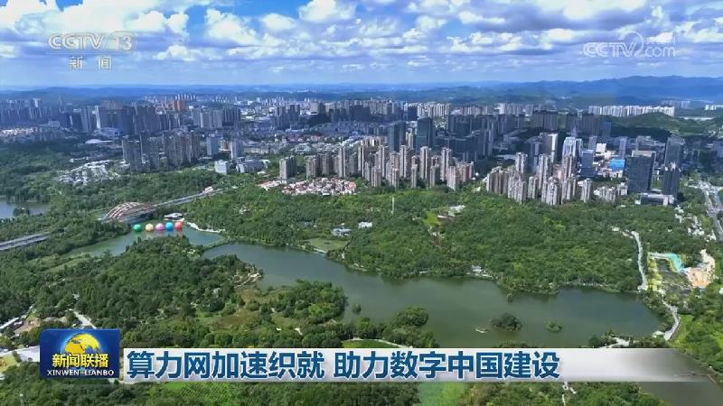
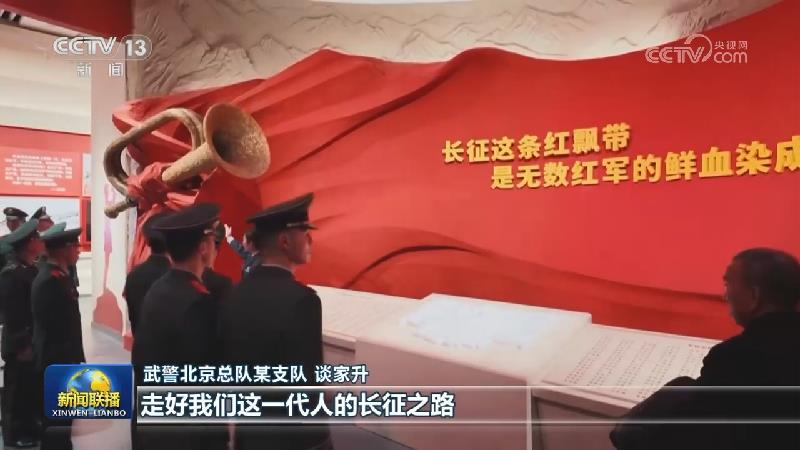
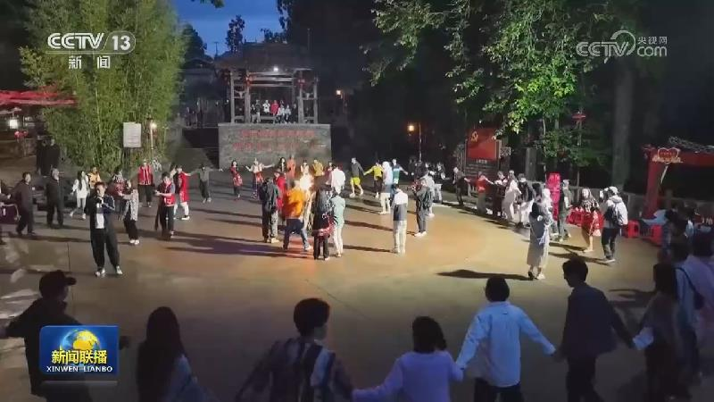
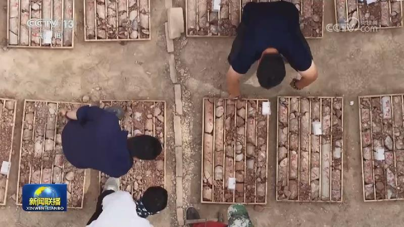
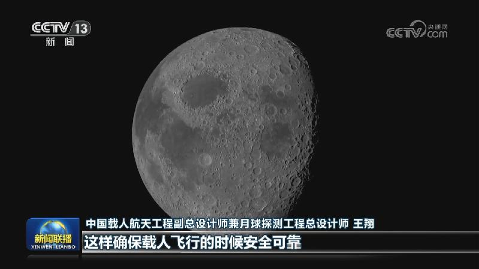
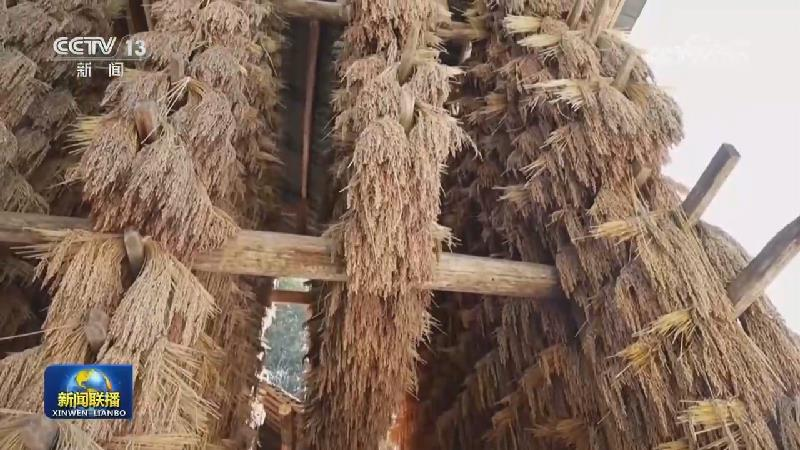
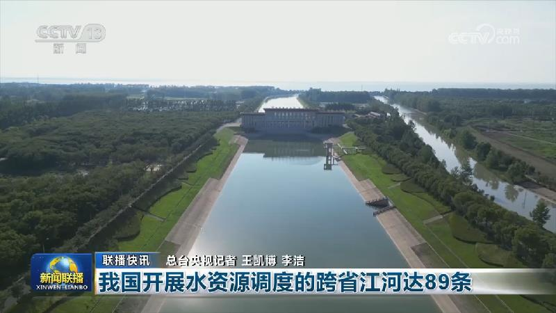
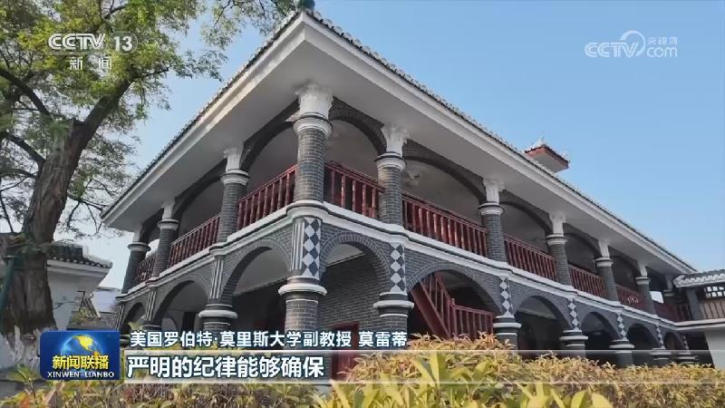
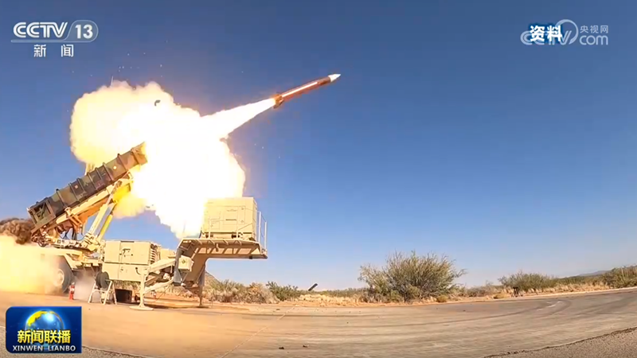

01
【学习贯彻党的二十届五中全会精神】走在前作表率 奋力谱写持之以恒推进全面从严治党新篇章
党的二十届五中全会审议通过了《中共中央关于持之以恒推进全面从严治党若干重大问题的决定》，充分体现了我们党对加强自身建设的高度清醒和坚强意志，充分彰显了以习近平同志为核心的党中央强党强国的历史主动，具有重大的里程碑意义。连日来，中央和国家机关党员干部深入学习五中全会精神，表示要以习近平党建思想为指引，在落实持之以恒推进全面从严治党的各项部署中走在前、作表率，在新的赶考之路上交出更加优异的答卷。

党的二十届五中全会审议通过了《中共中央关于持之以恒推进全面从严治党若干重大问题的决定》，充分体现了我们党对加强自身建设的高度清醒和坚强意志，充分彰显了以习近平同志为核心的党中央强党强国的历史主动，具有重大的里程碑意义。连日来，中央和国家机关党员干部深入学习五中全会精神，表示要以习近平党建思想为指引，在落实持之以恒推进全面从严治党的各项部署中走在前、作表率，在新的赶考之路上交出更加优异的答卷。
明天（11月1日）出版的《人民日报》将发表评论员文章，题目是《坚持服务党的使命任务——论学习贯彻党的二十届五中全会精神》。
本台今天（10月31日）播发央视快评《持之以恒推进全面从严治党》。

算力网是人工智能发展的基础支撑。作为“十五五”规划的重大工程，开局起步之年，算力网提速升级，各地因地制宜推进数字中国建设。
今年以来，我国持续扩大高水平开放，以更大力度吸引和利用外资。从绿色生产到智能制造，跨国企业加快在中国建设全球创新枢纽，共享中国发展机遇。

连日来，万余名官兵走进中国人民革命军事博物馆，参观“伟大的远征——纪念中国工农红军长征胜利90周年主题展览”，从伟大长征精神中汲取矢志强军、向战而行的奋进力量。

在云南腾冲，有一座名为“司莫拉”的村寨。佤语中，“司莫拉”意为“幸福的地方”。近年来，司莫拉村以农文旅深度融合助力乡村振兴，各族群众厚植中华民族共同体意识，同心共筑家园，把日子越过越红火。

记者从自然资源部获悉，我国找矿行动“十五五”开局良好，取得一批较好成果。安徽茶亭铜金矿勘查项目在短短4个月，完成钻探工作量约10万米，取得重大突破。贵州毕节猪拱塘铅锌矿是探获的全隐伏、高品位、大厚度的超大型铅锌矿床。战略新兴矿产方面，新疆拜城发现国内首个古河湖相锆石砂矿，填补了国内超大型锆矿床找矿空白，资源储量规模相当于40多个大型锆矿，伴生的铪矿也达到超大型规模，可大幅提高锆矿国内自给能力。

记者今天（10月31日）在第七届载人航天学术大会上获悉，我国月球探测工程登月阶段任务各项研制建设工作正在扎实推进，拟于载人登月任务前安排梦舟载人飞船和揽月着陆器无人飞行任务。
今天（10月31日），第140届广交会第三期线下展开展，一大批智能创新、绿色低碳的轻工产品集中亮相。

金秋时节，神州大地色彩斑斓。人们走进自然，饱览秋日风光，感知生态之美。秋风起，北京北部山区彩叶相映，形成一幅流动的秋色长卷。八达岭长城漫山红叶与苍松翠柏相映，古老城垣穿行彩叶林海，雄浑壮阔。在内蒙古兴安盟，96万亩天然五角枫迎来一年中最美的时节，疏林草原上，五彩林海连绵铺展。在秦岭终南山世界地质公园，漫山黄栌、槭树等沿山势次第转色，日均游客接待量超4000人次。……

前三季度全国可再生能源发电量同比增长约8%

国际人士表示，中国共产党二十届五中全会是一次将载入史册的重要会议，展现了中国共产党坚持全面从严治党的信心和决心。他们认为，中国共产党勇于自我革命，不断提高执政能力，赢得中国人民信任和拥护，确保了国家不断发展进步。

俄称筹备会谈不代表俄承诺限制军事行动